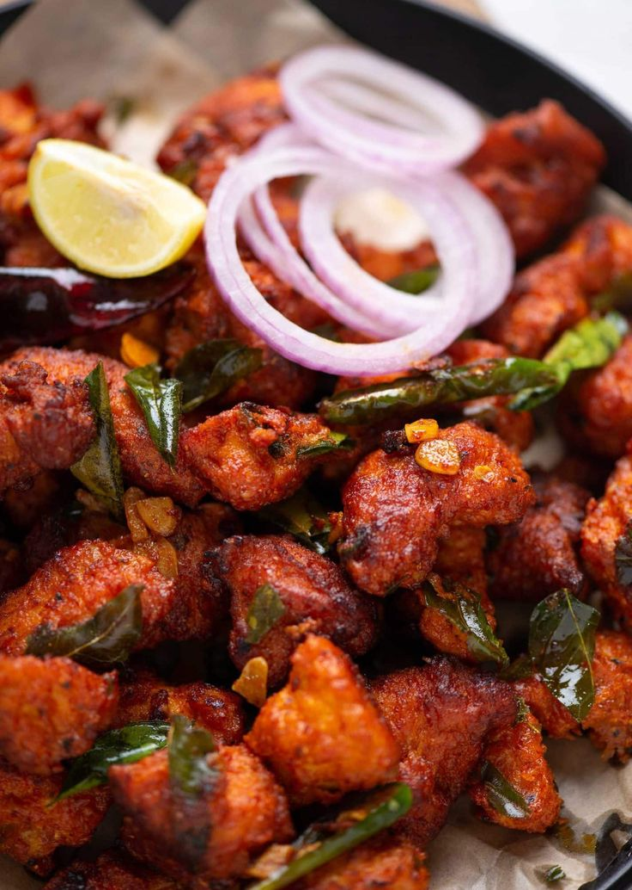

Wash and soak dosa rice, urad dal, chana dal, and fenugreek seeds together for 6-8 hours.
Grind the soaked ingredients into a smooth batter using a wet grinder or blender. Add salt and mix well. Ferment the batter overnight or for at least 8 hours.
For the potato filling, heat oil in a pan. Add mustard seeds and cumin seeds. Let them splutter.
Add chopped onions and green chilies. Sauté until onions turn translucent.
Add turmeric powder and asafoetida. Mix well.
Add mashed potatoes and salt. Cook for 2-3 minutes.
Remove from heat and add chopped coriander leaves. Mix well and set aside.
To make dosas, heat a non-stick skillet or dosa tawa. Pour a ladleful of batter and spread it in a circular motion to form a thin dosa.
Drizzle some oil around the edges and cook until the dosa turns golden brown and crisp.
Place a portion of the potato filling in the center of the dosa and fold it over. Serve hot with coconut chutney and sambar.
Neer Dosa
Neer dosa is a traditional South Indian crepe made from rice batter. It is light, soft, and pairs well with various chutneys and curries.
Wash the rice thoroughly and soak it in water for 4-5 hours or overnight.
Drain the soaked rice and transfer it to a blender. Add a little water and blend until you get a smooth batter with pouring consistency. The batter should be thinner than regular dosa batter.
Add salt to the batter and mix well.
Heat a non-stick skillet or dosa tawa over medium heat.
Pour a ladleful of batter onto the center of the skillet and quickly spread it in a circular motion to form a thin dosa.
Drizzle some oil around the edges of the dosa and cook until the edges start to lift and the surface of the dosa appears cooked.
Using a spatula, gently loosen the edges and fold the dosa into half or roll it if desired.
Repeat the process with the remaining batter.
Serve hot with coconut chutney, sambar, or any curry of your choice.
Kerala Beef Fry
A delicious and spicy Kerala-style beef fry, perfect as a side dish or appetizer.
Wash and soak urad dal in water for 3-4 hours. Drain well.
Grind the soaked urad dal into a smooth batter using minimal water.
Transfer the batter into a bowl and add rice flour, grated ginger, chopped green chilies, cumin seeds, asafoetida, chopped coriander leaves, and salt. Mix well to combine.
Allow the batter to ferment for 3-4 hours or until it becomes slightly fluffy.
Heat oil in a deep frying pan over medium heat.
Scoop small portions of the batter using a spoon and gently drop them into the hot oil.
Fry the goli bajje in batches until they turn golden brown and crisp.
Remove from oil using a slotted spoon and drain excess oil on a paper towel.
Serve hot with coconut chutney or sambar.
Udupi Sambar
Udupi Sambar is a delicious South Indian lentil-based vegetable stew made with a medley of vegetables, tamarind, and aromatic spices.
Pressure cook the toor dal until soft and mushy. Mash and set aside.
Soak the tamarind in warm water for 15-20 minutes. Extract the juice and set aside.
In a large pot, heat oil and add mustard seeds. When they splutter, add fenugreek seeds, dry red chilies, and asafoetida.
Add chopped onions and sauté until they turn translucent.
Add all the chopped vegetables, slit green chilies, turmeric powder, and salt. Mix well and cook for 5-7 minutes.
Add tamarind extract and bring the mixture to a boil. Reduce heat and simmer until vegetables are cooked through.
Add sambar powder and mashed toor dal. Mix well and simmer for another 5-7 minutes.
In a small pan, heat a teaspoon of oil and roast grated coconut until golden brown. Add it to the sambar and mix well.
Garnish with fresh coriander leaves and serve hot with rice or idli.
Malabar Parotta
Malabar Parotta, also known as Kerala Parotta, is a popular South Indian flatbread made from maida flour. It is flaky, crispy, and goes well with a variety of side dishes.
Heat oil in a pan or kadhai. Add chopped onions and green chilies. Sauté until onions turn translucent.
Add chopped tomatoes and cook until they turn mushy.
If using eggs, push the onion-tomato mixture to one side of the pan and crack the eggs into the empty space. Scramble the eggs until cooked.
Add chopped capsicum and cook for a couple of minutes.
Add shredded parottas and mix well with the masala.
Add turmeric powder, red chili powder, garam masala, and salt. Mix until everything is well combined.
Continue to cook for 5-7 minutes, stirring occasionally, until the parottas are heated through and well coated with the masala.
Garnish with chopped coriander leaves and serve hot.
<
Kerala Fish Moilee
Kerala Fish Moilee is a traditional fish curry from Kerala, India, made with coconut milk, spices, and fish fillets. It has a creamy texture and subtle flavors, making it a delightful dish for seafood lovers.
Clean and cut the fish fillets into pieces. Marinate them with turmeric powder and salt. Keep aside for 10 minutes.
Heat coconut oil in a pan. Add mustard seeds and let them splutter.
Add sliced onions, green chilies, ginger, and garlic. Sauté until onions turn translucent.
Add curry leaves, turmeric powder, red chili powder, and coriander powder. Sauté for a minute.
Add sliced tomatoes and cook until they turn soft.
Now, add marinated fish pieces and mix gently with the masala.
Pour thick coconut milk and adjust salt. Bring it to a gentle simmer. Do not boil vigorously as it may cause the coconut milk to curdle.
Cover and cook for 8-10 minutes or until the fish is cooked through.
Once done, remove from heat and garnish with fresh curry leaves.
Serve hot with steamed rice or appam.
Puliyotharai (Tamarind Rice)
Puliyotharai is a tangy and spicy South Indian rice dish made with tamarind pulp, spices, and rice. It is a popular recipe prepared during festivals and special occasions.
Wash the rice thoroughly and soak it in water for 30 minutes. Drain and set aside.
In a heavy-bottomed pan, bring the milk to a boil.
Add the soaked rice to the boiling milk and cook on low heat, stirring occasionally, until the rice is soft and the milk thickens (about 30-40 minutes).
Add sugar and continue to cook until the sugar dissolves completely.
Crush the saffron strands and dissolve them in a tablespoon of warm milk. Add this saffron milk and cardamom powder to the payasam and mix well.
Heat ghee in a small pan and fry the chopped nuts until golden brown. Add these fried nuts to the payasam.
Simmer for a few more minutes until the payasam reaches the desired consistency.
Turn off the heat and let the payasam cool slightly before serving.
Serve warm or chilled, garnished with more chopped nuts if desired.

Chicken 65
Chicken 65 is a popular spicy, deep-fried chicken dish originating from South India. It is made with boneless chicken marinated in a flavorful blend of spices and deep-fried until crispy.
In a mixing bowl, combine ginger-garlic paste, red chili powder, coriander powder, turmeric powder, garam masala, corn flour, all-purpose flour, yogurt, egg, and salt to make a smooth marinade.
Add the chicken pieces to the marinade and mix well. Allow it to marinate for at least 1 hour in the refrigerator.
Heat oil in a deep frying pan over medium-high heat.
Once the oil is hot, carefully add the marinated chicken pieces one by one into the oil and fry until they turn golden brown and crispy.
Remove the fried chicken from the oil using a slotted spoon and drain excess oil on paper towels.
Garnish with curry leaves and slit green chilies.
Serve hot as an appetizer or as a side dish with rice or roti.